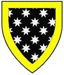

Blev ca 30 år.
omkring 1019 Danmark.
1049 Dartmouth, England. [1]
Björn Estridsson
Björn Estridsson (även: Beorn eller Bjørn Estrithson ; † 1049 i Dartmouth , mördad) var en son till Ulf Jarl och Estrid Svendsdatter , syster till Knud den store .
Livet
Björn bosatte sig i England, där många av hans släktingar hade höga befattningar. Han styrde själv ett jarldöme i det som nu är East Midlands . [1]
År 1047 flydde Björns kusin Sweyn Godwinson från England. Tillsammans med Harold Godwinson gynnades han av Sweyns frånvaro när han tilldelades en del av sin egendom. [1] [2]
När Sweyn återvände till England och försökte få nåd av kungen, vägrade Björn och Harald att ge tillbaka landet. Med tre andra var Björn från Sweyn till Bosham ( West Sussex lockad), där han tillfångatogs. Han fördes till Dartmouth med fartyg, där han dödades och hans kropp begravdes. [1] [3] Harold Godwinson lät senare begrava Björn bredvid sin farbror Knut den store i Old Minister, Winchester . [1]
Beorn kunde ha fått en son. Morkinskinna nämner en Åsmund, brorson till Sweyn Estridsson, som uttryckligen omnämns som son till Björn, kungens bror. Den Harald Hardrådes saga , en del av Heimskringla , namnger samma Asmund som son till Sven syster. [4]